Zabaglione
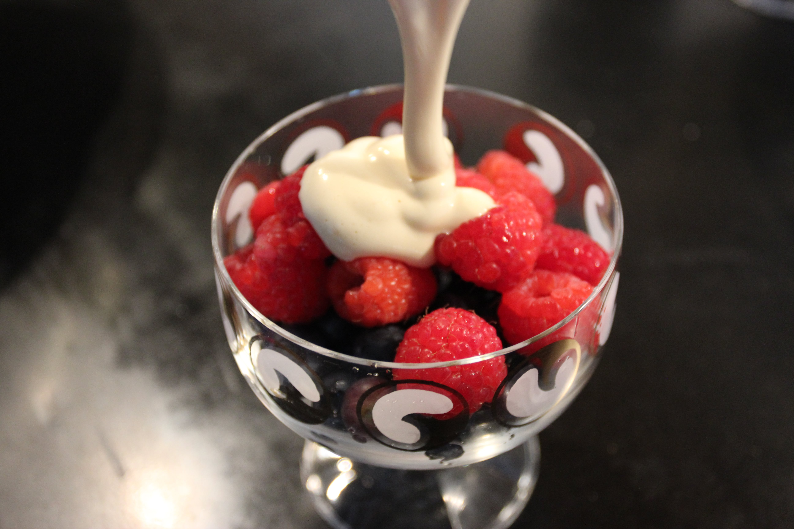 Effort: Easy30 mins (Prep)
Ingredients
Dry Ingredients
- 3 tablespoons white sugar
- (Optional) Berries
Wet Ingredients
- 2 cups water
- 3 tablespoons Sherry wine
- 4 egg yolks
Preparation
- Rinse berries, if using them.
- Separate out four egg yolks (roughly one yolk per person served). Whip the yolks together. Add in sugar and wine.
- Bring water to a simmer over the stove. Careful not to boil the water.
- Put the egg/sugar/wine mix over the stovepot so that the mix bowl is barely touching the water. Whisk the mix for 6 minutes (until thick and fluffy).
- Fill serving cup with berries.
- Pour mix over berries and serve.
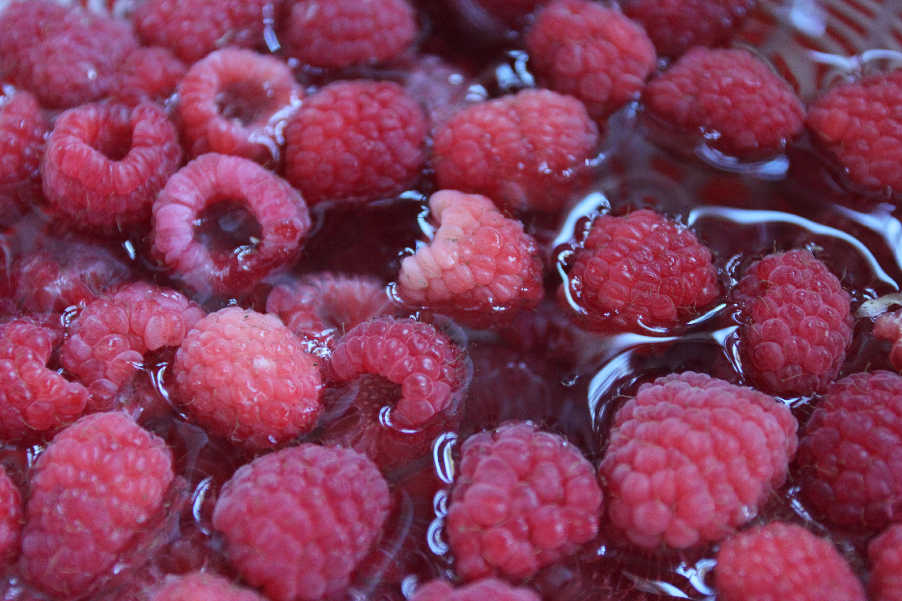
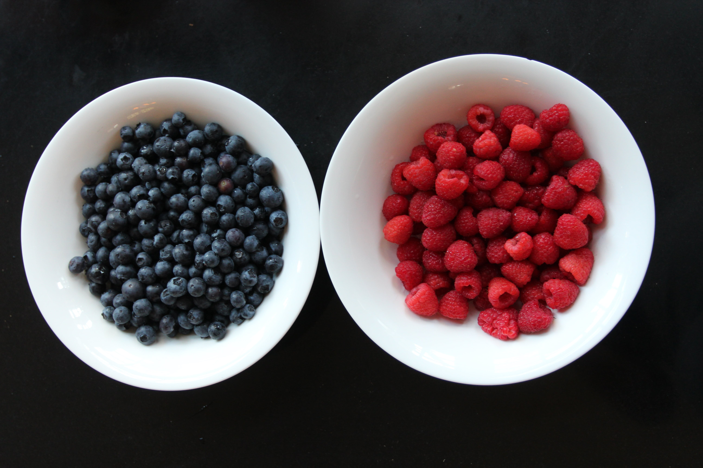
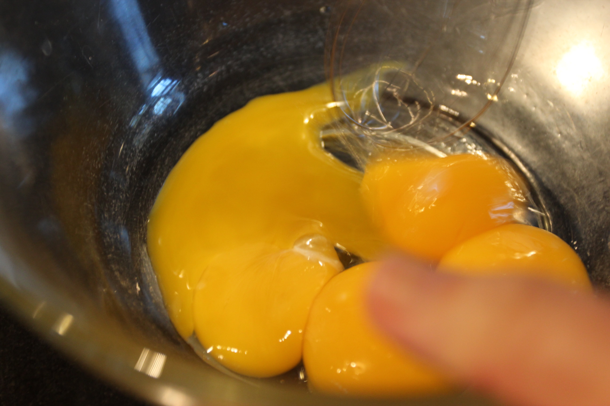
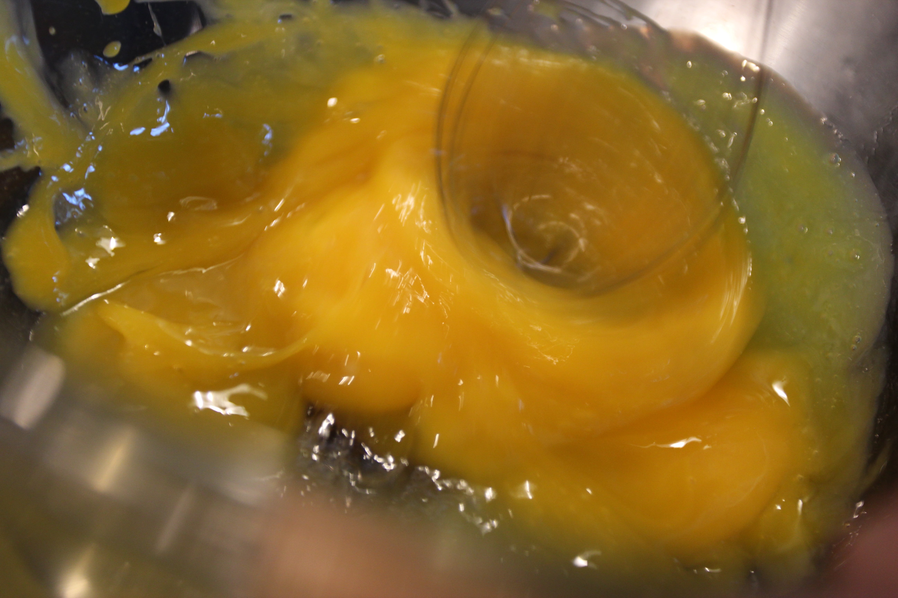
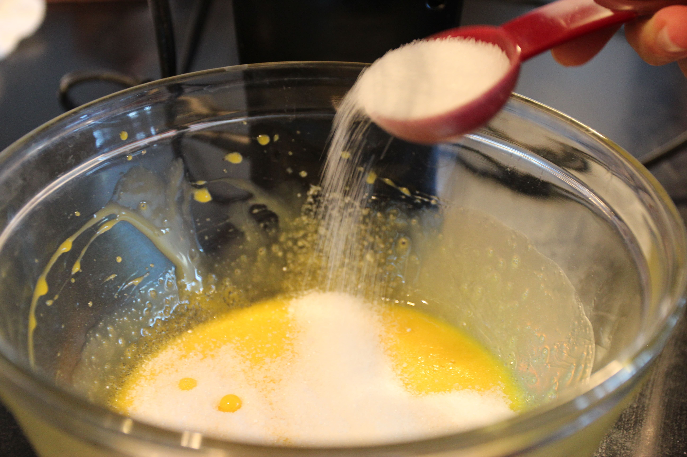
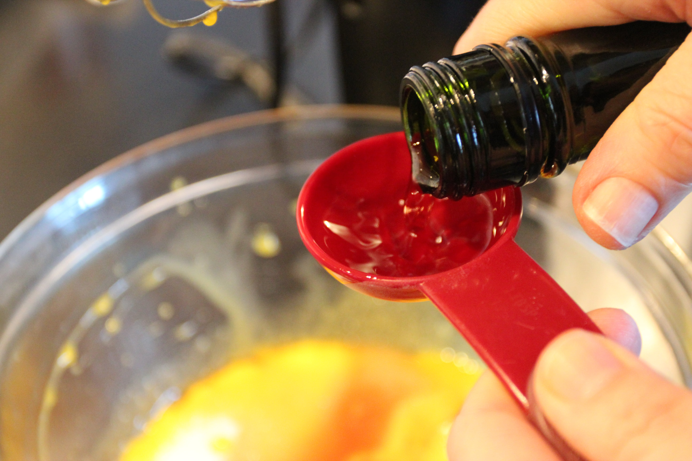
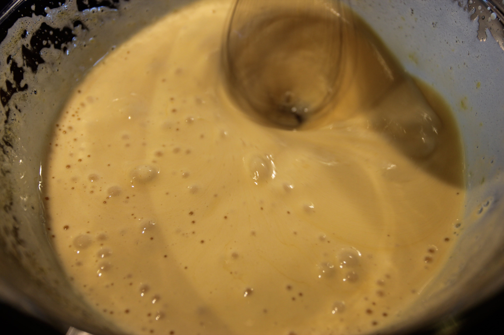
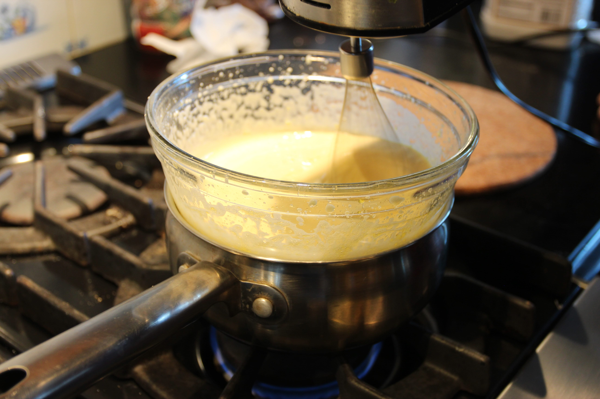
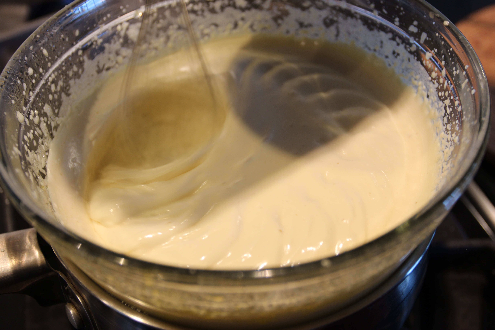
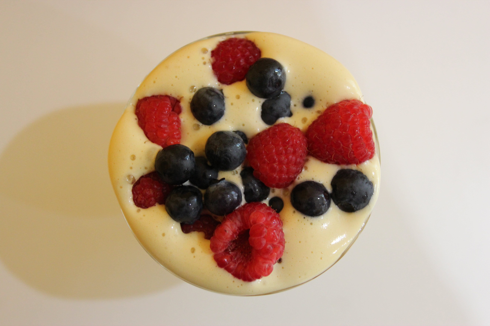
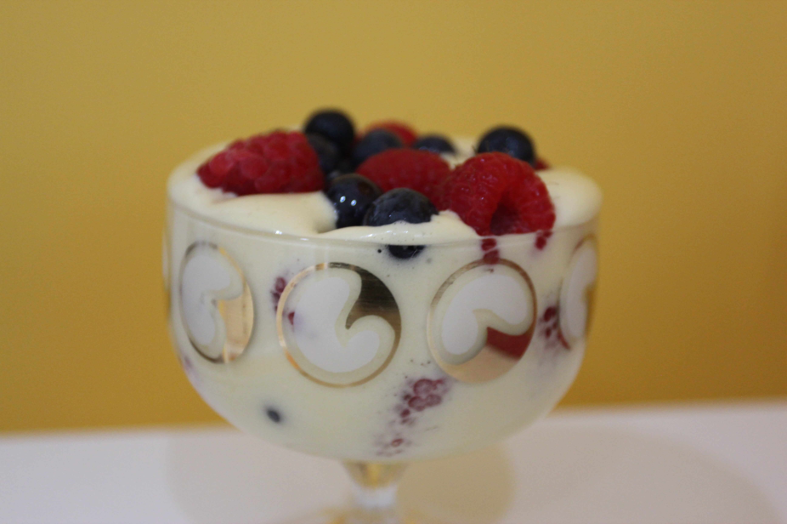